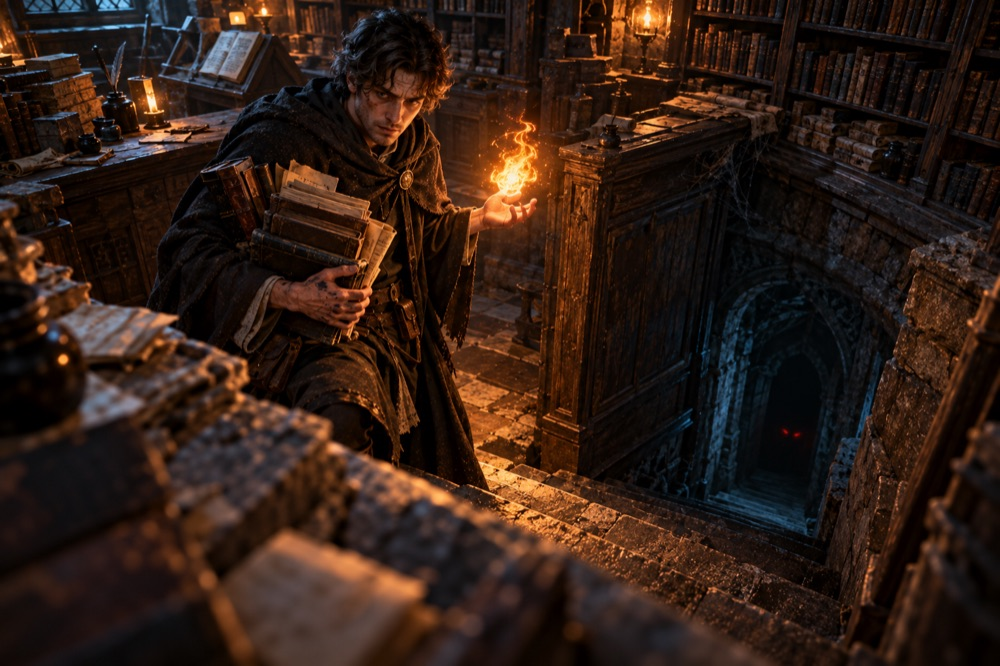
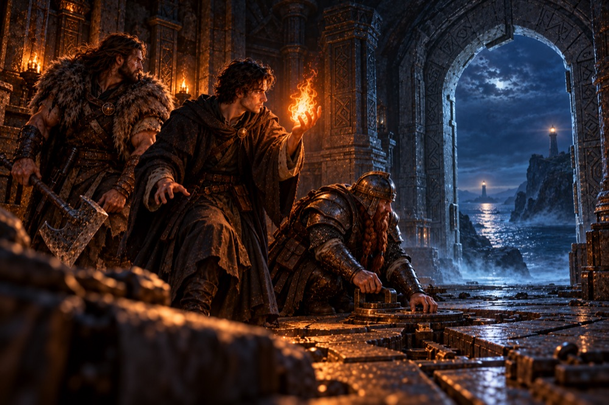

Scendi nel dungeon. Tira i dadi. Scopri cosa si nasconde oltre la Porta Runata. Un dungeon crawler a turni per Mac, con una campagna che vale la pena di finire.
Descend into the dungeon. Roll the dice. Find out what lies beyond the Runed Gate. A turn-based dungeon crawler for Mac, with a campaign worth finishing.
Dungeon Legacy porta al tavolo digitale il sapore dei classici dungeon crawler, dentro una storia vera: luoghi da esplorare, porte segrete, mostri da affrontare dado contro dado e scelte che hanno conseguenze.
Dungeon Legacy brings the flavour of classic dungeon crawlers to a digital table, inside a real story: places to explore, secret doors, monsters to face die against die, and choices with consequences.
Ogni capitolo ha la sua mappa, con porte chiuse e segrete, trappole, reperti e incontri da affrontare con giudizio.
Every chapter has its own map, with locked and secret doors, traps, relics and encounters to face with care.
Attacco e difesa si risolvono dado contro dado. Il risultato compare solo quando i dadi si sono fermati.
Attack and defence are resolved die against die. The result shows only once the dice have landed.
Armi, armature, scudi e pozioni. L'oro si condivide tra gli eroi e si spende alla Bottega tra un capitolo e l'altro, dove gli eroi imparano anche nuove lezioni.
Weapons, armour, shields and potions. Gold is shared between heroes and spent at the Shop between chapters, where heroes also learn new lessons.
La Campagna Fondativa in 14 capitoli, con personaggi, dialoghi, boss e titoli di coda, più l'espansione Kharnhold.
The Foundational Campaign in 14 chapters, with characters, dialogue, bosses and end credits, plus the Kharnhold expansion.
Tutto il gioco è tradotto in entrambe le lingue, e puoi cambiarla in qualsiasi momento.
The whole game is translated into both languages, and you can switch at any time.
Niente account, niente pubblicità, niente analytics. I tuoi salvataggi restano sul tuo dispositivo.
No account, no ads, no analytics. Your saves stay on your device.
Borran, Kelgar, Rhoswen e Serrin sono i compagni della Campagna. Corvin Lowe, giovane mago dello scriptorium di Calmavia, guida da solo il Prologo III e affianca Borran e Kelgar nella Missione 11.
Borran, Kelgar, Rhoswen and Serrin are the companions of the Campaign. Corvin Lowe, a young mage of the Calmavia scriptorium, leads Prologue III on his own and joins Borran and Kelgar in Mission 11.


Tre prologhi e undici missioni: villaggi in rovina, guardiani che non dormono, una Bruma che sogna, una Porta che non doveva riaprirsi e un varco tra due fari.
Three prologues and eleven missions: ruined villages, guardians who never sleep, a Mist that dreams, a Gate that was never meant to reopen and a gap between two lighthouses.




Prologhi e Missione 1 sono gratis. Se la storia ti conquista, un unico acquisto sblocca il resto per sempre, con la Condivisione in famiglia di Apple.
The prologues and Mission 1 are free. If the story wins you over, a single purchase unlocks the rest forever, with Apple Family Sharing.